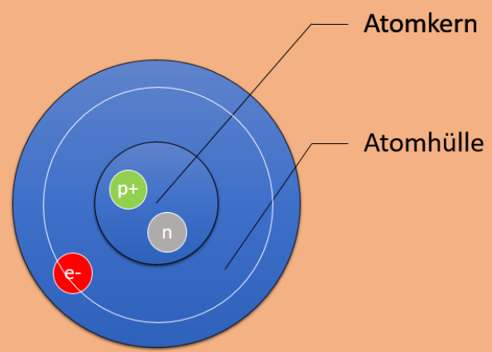
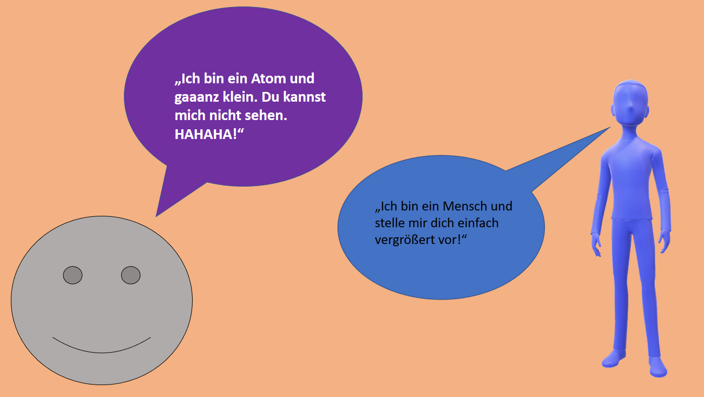

Doch wie ist so ein Atom eigentlich aufgebaut?
Atome bestehen aus einem Atomkern und einer Atomhülle. Der Atomkern besteht aus Protonen und Neutronen. In der Hülle kreisen Elektronen auf Bahnen. Zur Veranschaulichung dient das sogenannte Schalenmodell, aber dazu später etwas. Man kann einzelne Atome mit bloßem Auge nicht sehen, da sie unfassbar klein sind. Deswegen gibt es Modelle, welche uns diese Atome in millionenfacher Vergrößerung zeigen. Modelle dienen dazu, ein kompliziertes Original (in unserem Fall den Aufbau eines Atoms) vereinfacht darzustellen.
Meistens wird die Anzahl von Protonen und Neutronen in einem Modell in jeweils einem Teilchen zusammengefasst, da das Atommodell sonst unübersichtlich wird. (Trotzdem sind genauso viele Protonen und Neutronen im Kern, wie Elektronen in der Hülle.)  < Letzte Seite Nächste Seite >